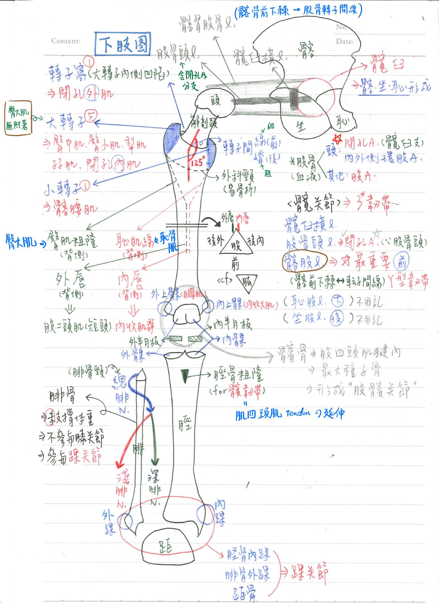
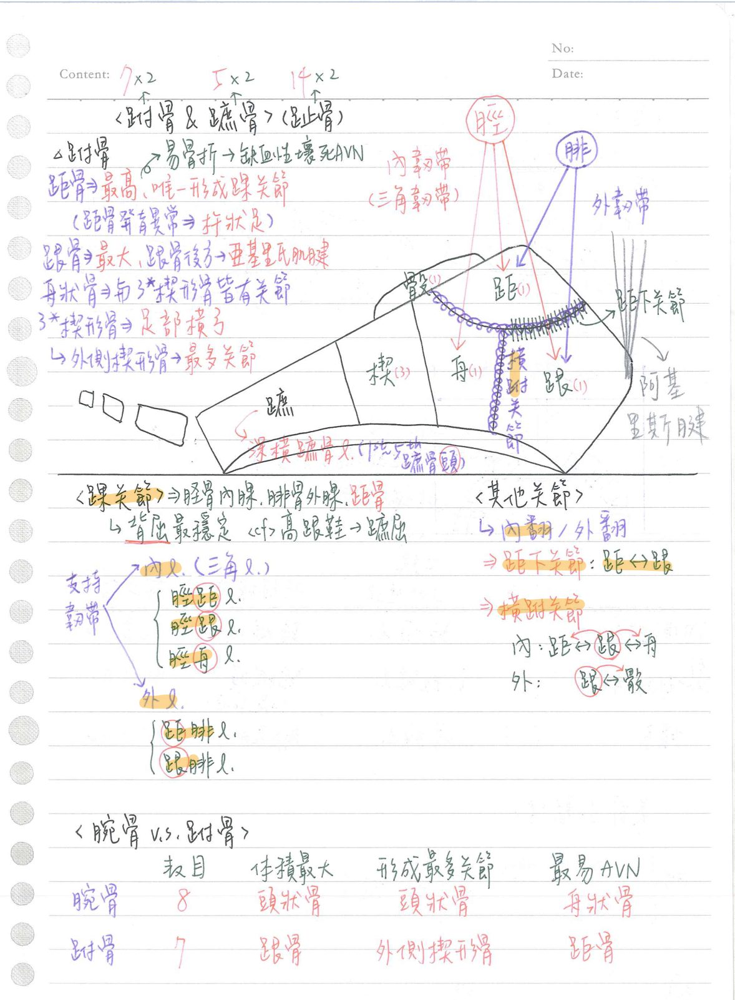
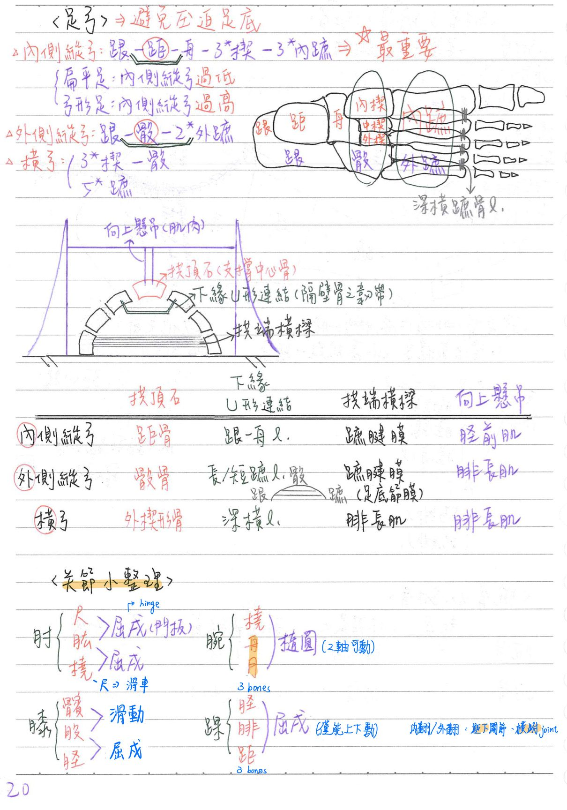

🦴 骨骼系統(下肢&足弓)
下肢骨骼概論
- 大腿：股骨(femur)
- 膝部：髕骨(patella)
- 小腿：脛骨(tibia，內側)、腓骨(fibula，外側)
- 跗骨(tarsal bone)：共七塊(跗念"夫")
- 跟骨(calcaneus)
- 距骨(talus)
- 舟狀骨(navicular)
- 骰子骨(cuboid)
- 內、中、外側楔形骨(cuneiform)
- 蹠骨(metatarsal bone)：5塊(蹠念"直")
- 趾骨(phalanx)：14塊
髖關節
- 構造：股骨頭-髖臼；屬於球窩關節
- 支持韌帶：
- 髖臼橫韌帶(transverse acetabular l.)：髖臼切跡(acetabular notch)的橫向連結
- ★★股骨頭韌帶(femoral head l.)：股骨頭-髖臼窩；內含閉孔A分支
- 外表面：3條
- 髂股韌帶(iliofemoral l.)：Y形韌帶；位於前方；髂骨前下棘-股骨大小轉子間線
⇒固定髖關節最大、最重要的韌帶
- 恥股韌帶(pubofemoral l.)：下方
- 坐股韌帶(ischiofemoral l.)：後方
- 髂股韌帶(iliofemoral l.)：Y形韌帶；位於前方；髂骨前下棘-股骨大小轉子間線
- ★血液供應：6條
- 閉孔A
- 轉子吻合(trochanteric anastomosis)：上臀A.、下臀A.、內側/外側環股A
- 十字吻合(cruciate anastomosis)：下臀A.、內側/外側環股A、深股A第一穿透支
- 神經支配：股N、閉孔N、上臀N、股方肌N
股骨(femur)：全身最長、最重、最大之骨頭
- 股骨頭：
- 血液供應：閉孔A的髖臼支(位於股骨頭韌帶內)、內、外側環股A(medial/lateral circumflex femoral a.，為深股A分枝)
- 除股骨頭外，股骨其餘部位由股A供應血液
- 股骨頭&髖骨的髖臼形成→髖關節
- 股骨頸：(跟肱骨的相同)
- 解剖頸(anatomic neck)：位於大、小轉子之近端
- 內唇：內收肌群附著；向上延伸為恥肌線(pectineal line，恥骨肌附著)至小轉子
- 外科頸(surgical neck)：位於大、小轉子之遠端；較易骨折
- ★股骨頸骨折：股骨頭韌帶、內、外側環股A受損⇒股骨頭壞死、大腿縮短(因股直肌&腿後肌群收縮)、大腿外展/外旋(因為臀肌收縮)
- 股骨轉子(trochanter)：
- ★★股骨大轉子(greater trochanter)：股骨近端外側
- 具臀中肌、臀小肌、梨狀肌、孖肌(上孖肌&下孖肌)、閉孔內肌附著(沒有臀大肌)
- ★[110-1]股骨小轉子(lesser trochanter)：股骨近端內側；具髂腰肌(髂肌+腰大肌)附著
- 轉子窩(trochanteric fossa)：大轉子內側凹陷；具閉孔外肌附著
- 轉子間線(intertrochanteric line)：位於前方(較細)
- 轉子間嵴(intertrochanteric crest)：位於後方(較粗)
- ★★股骨大轉子(greater trochanter)：股骨近端外側
- 股骨骨幹(shaft)：三稜柱(前、後內、後外)
- 傾斜角(angle of inclination)：與股骨頸夾角125度(向上)、15度(向前)—>for分散壓力
- ★★粗線(linea aspera)：位於骨幹之後面
- 外唇：股二頭肌(短頭)附著；向上延伸為★★臀肌粗隆(gluteal tuberosity，臀大肌附著)至大轉子
- 股骨遠端：
- 髁(condyle)：內髁、外髁；與脛骨的內、外髁形成→股脛關節
(1)後方：髁間窩(intercondylar fossa)
(2)前方：髕骨關節面(patellar surface)
- 上髁(epicondyle)：
(1)★內上髁：具內收肌結節(adductor tubercle)；內收大肌附著
(2)外上髁：具膕肌溝(popliteus groove)；膕肌通過
- 髁(condyle)：內髁、外髁；與脛骨的內、外髁形成→股脛關節
髕骨(patella)：全身最大種子骨
- 位於股四頭肌之肌腱內
- 後方與股骨相關節
脛骨、腓骨
- 近端：
- 脛骨內、外髁—>與腓骨內、外髁相關節
- ★脛骨粗隆(tibial tuberosity)：髕韌帶(patellar l.)附著
※髕韌帶：為股四頭肌肌腱的延伸(髕骨下緣—>脛骨粗隆)
- ★腓骨頸：總腓N通過
- 腓骨並未支撐體重
備註
骨科醫師上課是說fibula承受1/6(也有paper說大概20%)左右的體重
查資料是發現兩種說法都有
- 遠端：
- 脛骨遠端的內髁+腓骨遠端的外髁+距骨(talus)→形成踝關節(腓+脛+距)


膝關節
- 構成：★股+髕+脛(沒有腓骨)
- 股髕關節(滑動關節)+股脛關節(屈戍關節)
- 關節囊(joint capsule)：外層=纖維層(fibrous layer)
內層=滑膜膜(synovial membrane)
- 血液供應：膝部吻合(genicular anastomosis)，由股A.、膝膕A.、脛前A.的分支形成
膝關節-特化結構
- 半月板(meniscus)：位於關節囊&滑液膜內
- 呈C形；為纖維性軟骨→加深關節腔深度&減緩衝擊力
- ★內半月板：附著於內側副韌帶；移動性較小
- 外半月板：未附著於外側副韌帶；移動性較大；與膕肌肌腱相連
- 膝橫韌帶(transverse knee l.)：連接內、外半月板之前方
- 十字韌帶(cruciate l.)：位於關節囊內、滑液膜外
- ★前十字韌帶(ACL)：脛前-股後(髁間窩外壁)
於膝關節伸展時拉緊⇒防脛骨前脫位(股骨後脫位)
- 後十字韌帶(PCL)：脛後-股前(髁間窩內壁)
於膝關節屈曲時拉緊⇒防脛骨後脫位(股骨前脫位)
- ★前十字韌帶(ACL)：脛前-股後(髁間窩外壁)
- 支持韌帶：位於關節囊外、滑液膜外
- 脛側副韌帶(tibial collateral l.=內側副韌帶)：防小腿內脫位(外展)
→膝關節外側遭撞擊時易受損(理解：遭撞擊—>另一側會受損)
- 腓側副韌帶(fibular collateral l.=外側副韌帶)：防小腿外脫位(內收)
→膝關節內側遭撞擊時易受損
- 斜膕韌帶(oblique popliteal l.)：半膜肌肌腱的延伸⇒強化後方
- 髕韌帶：縱向—>強化前方
- 脛側副韌帶(tibial collateral l.=內側副韌帶)：防小腿內脫位(外展)
knee locking & unlocking mechanism
- 膝關節鎖緊(lock)：股四頭肌(內旋股骨)
- 膝關節鬆開(unlock)：膕肌(外旋股骨)

- (重點)unhappy triad：常見的膝關節合併損傷
—>內半月板、內側副韌帶、前十字韌帶皆受損
- 滑液囊(Synovial bursa)：膝關節具全身最大、最廣泛的滑液囊
- 前方：髕上滑液囊(suprapatellar)、髕前滑液囊(prepatellar)、淺髕下滑液囊(superficial infrapatellar)、深髕下滑液囊(deep infrapatellar)
- 後方：膝膕滑液囊(popliteal)、半膜肌滑液囊(semimembranous)

足部
跗骨：共7塊
- 距骨(talus)：位置最高，唯一形成踝關節的跗骨
- 易骨折合併缺血性壞死(AVN)
- ★杵狀足(club foot)：距骨發育異常
- 跟骨(calcaneus)：最大、位於最後下方的跗骨
- 阿基里斯腱(Achillis tendon)：附著於跟骨後方
- 舟狀骨(navicular)：與三個楔形骨(cuneiform)均有互相關節
- 三塊楔形骨(cuneiform)：形成與維持足部橫弓
- 跗骨中形成最多關節的：外側楔形骨 <review>腕骨中形成最多關節的：頭狀骨
- 骰子骨
蹠骨(metatarsal bone)：5塊
- 結構：底-體(shaft)-頭
- 深橫蹠骨韌帶(deep transverse metatarsal l.)：連結第一~第五蹠骨頭—>限制其相對運動
- ★手指、腳趾的內收&外展運動：皆以第二指/趾為軸心
腕骨、跗骨比較
| Name | 數目 | 體積最大 | 形成最多關節 | 最易AVN |
|---|---|---|---|---|
| 腕骨 | 8 | 頭狀骨 | 頭狀骨 | 舟狀骨 |
| 跗骨 | 7 | 跟骨 | 外楔形骨 | 距骨 |
踝關節：在處於背屈(dorsiflexion)姿勢時最穩定(因為距骨前方較寬)
- 構造：脛骨(內髁)+腓骨(外髁)+距骨；屬於屈戍關節
- 支持韌帶：(考N次)
- 內韌帶=三角(deltoid)韌帶(粗壯)：3條
- 脛距韌帶(tibiotalar)
- 脛舟韌帶(tibionavicular)
- 脛跟韌帶(tibiocalcaneal)
- 外韌帶：3條 (趙神說是兩條，但前後距腓韌帶通常會分開討論)
- 前距腓韌帶(anterior talofibular l. , ATFL)：踝關節最易受傷的韌帶(內翻)
- 後距腓韌帶(posterior talofibular l. , PTFL)
- 跟腓韌帶(calcaneofibular l.)
- 內韌帶=三角(deltoid)韌帶(粗壯)：3條
- 內翻(inversion=內收+旋後)、外翻(eversion=外展+旋前)：
- 內翻、外翻是由距下&橫跗關節完成(不是踝關節)
- ★距下關節(subtalar)：距-跟骨
- 橫跗關節(transverse tarsal)：
- 內側：距-跟-舟狀骨
- 外側：跟-骰子骨
- 踝部常見傷害：
- 外踝扭傷(外韌帶扭傷)：過度內翻
- 腓骨外踝骨折：過度外轉(external rotation)

足弓(arch of the foot) [只有95, 96國考考過]
- 功能：(主要)避免壓迫足底的動脈&神經；(次要)形成槓桿幫助運動
- 足弓特定結構
足弓維持 拱頂石(key stone) 下緣U型連結 拱端橫梁(tie beam) 向上懸吊 內側縱弓 距骨 跟舟韌帶 蹠腱膜 脛前肌 外側縱弓 骰子骨 長/短蹠韌帶 蹠腱膜 腓長肌(腓骨長肌) 橫弓 外楔形骨 深橫韌帶 腓長肌 腓長肌
- 構造：
- 內側縱弓(最重要)：跟骨-距骨-舟狀骨-3楔形骨-3內蹠骨
- 扁平足(pes planus)：內側縱弓過低
- 弓形足(pes cavus)：內側縱弓過高
- 外側縱弓：跟骨-骰子骨-2外蹠骨
- 橫弓：3楔形骨-骰子骨/5蹠骨
- 跟舟韌帶：支撐距骨下壓的力量
- 內側縱弓(最重要)：跟骨-距骨-舟狀骨-3楔形骨-3內蹠骨
- 特定韌帶
韌帶名稱 位置 後→前 長蹠韌帶 ★足底外側淺層 ★★跟骨→骰子骨&蹠骨 短蹠韌帶 ★足底外側深層 ★跟骨→骰子骨 跟周韌帶 足底內側 跟骨(載距突)→舟狀骨 - ★長蹠韌帶&短蹠韌帶(long/short plantar l.)：屬於跟骰關節(calcaneocuboid joint)的韌帶
- 體重支撐：跟骨(25%)x2+蹠骨[第一蹠骨(10%)+其餘蹠骨(3.75%)x4]x2

📖 書本補充：與筆記不同或筆記沒寫到的地方
⚠️
以下為對照書本後整理，筆記原文未更動。標「筆記 vs 書」的是兩邊寫法不同、建議回頭確認的地方。「骨骼系統(重要關節)」頁的髖、膝、踝關節也以這裡的補充為準。
股骨（p.366）
- 股骨頭上的頭小凹（fovea capitis）：股骨頭圓韌帶（＝筆記的股骨頭韌帶）的附著處。
- 股骨頸：書上寫最易骨折處。
- 轉子間線（前）與轉子間嵴（後）都連接大、小轉子，是肌肉及韌帶附著處。
- 粗線：大腿內收肌群的附著處，分外側唇與內側唇。
- 外側唇往上 → 臀肌粗隆（臀大肌附著）。
- 內側唇往上 → 恥骨（螺旋）線（pectineal or spiral line）。
- 髁間窩：前、後十字韌帶的附著處。
- 內、外上髁：肌肉及膝關節側副韌帶的附著處；內收結節在內上髁上方，內收大肌附著。
脛骨和腓骨（p.367）
- 筆記 vs 書：筆記寫「脛骨內、外髁 → 與腓骨內、外髁相關節」；書上寫脛骨內、外髁是和股骨髁形成關節，同時是肌肉及膝關節側副韌帶的附著處。Claude 註：腓骨沒有內、外髁；腓骨頭只在脛骨外髁下方與脛骨形成近端脛腓關節。
- 脛骨的前、後髁間區：前、後十字韌帶及半月板的附著處。
- 內踝：外側面與距骨形成關節。
- 腓骨頭：未和股骨形成關節（所以不參與膝關節），為小腿後方許多肌肉的附著處。
- 腓骨頸：腓總神經經此進入小腿前部。
- 外踝：內側與距骨形成關節；比內踝明顯。
- 103-1-22 解析：腓骨骨幹外側的中間 1/3 沒有特殊骨性標記，不適合當表面解剖標記。
跗骨與跗骨隧道（p.368–370）
- 距骨：滑車（trochlea）與脛骨及腓骨的踝形成關節；距骨頭與前方的舟狀骨形成關節，是足部內翻及外翻的轉動軸心。
- 跟骨：
- 跟骨粗隆：跟腱及足底肌肉與韌帶的附著處。
- 腓骨滑車（fibular trochlea）：分開腓長肌和腓短肌的肌腱。
- 載距突（sustentaculum tali）：在內側支撐距骨頭。
- 舟狀骨介於距骨和楔狀骨之間；骰骨在最外側，上面有凹溝供腓長肌肌腱通過；3 塊楔狀骨與舟狀骨（後）及對應的蹠骨（前）形成關節。
- 跗骨隧道（tarsal tunnel）（筆記沒寫）：
- 位置：足部內側、內踝的後方；由跗骨（內側）和屈肌支持帶（外側）圍成。
- 通過：脛後肌、屈拇長肌及屈趾長肌的肌腱、脛神經、脛後動脈及靜脈。
- 考點：通過的肌腱負責腳趾的屈曲；在此可摸到脛後動脈的脈搏（足底內、外側動脈在這裡還沒分出）；發炎最易傷到脛神經；足底外側動脈出血可在跗骨隧道按壓止血。
髖及膝關節（p.371–372）
- 髖關節（杵臼）：
- 髖臼唇（labrum）和髖臼橫韌帶可加深關節窩（筆記沒寫髖臼唇）。
- 髂股（前）、恥股（下）、坐股（由後往前旋轉附著）韌帶強化關節。
- 圓韌帶（ligamentum teres）：由髖臼橫韌帶到股骨頭小凹，內有動脈到股骨頭。
- 動作：屈曲、伸展、外展、內收、內旋、外旋及迴轉。
- 書的提示：髂股韌帶呈 Y 字型，是全身最強的韌帶，站立時防止髖關節過度伸展（筆記寫「固定髖關節最大、最重要」）。
- 膝關節（屈戍）：
- 相接處：股骨內、外髁與脛骨內、外髁（腓骨不參與）。
- 被囊外韌帶：髕韌帶（股四頭肌肌腱的延伸）；腓側和脛側副韌帶在膝關節伸展時會被拉緊；膕斜韌帶（半膜肌肌腱的延伸）；膕弓狀韌帶（arcuate popliteal）蓋住膕肌（筆記沒寫）。
- 關節內：內、外側半月板（纖維軟骨）；前、後十字韌帶分別防止脛骨往前、往後滑動（股骨不動時）。
- 動作：屈曲及伸展，在屈曲狀態下才可內旋及外旋。
- 書的提示：脛側副韌帶與內側半月板相連；腓側副韌帶與外側半月板之間被膕肌的肌腱隔開。
- 112-2-28 解析：前十字韌帶在關節囊（緻密結締組織）內、滑液囊外（與筆記一致）。
腳踝和足底的關節（p.375）
- 踝（距小腿）關節：屈戍；內踝、脛骨遠端、腓骨外踝與距骨滑車相接；外側及內側（三角）韌帶；距骨滑車前大後小，所以背屈時較穩定（與筆記一致）；動作＝背屈及蹠屈。
- 距下（距跟）關節：滑動關節；距骨下表面與跟骨上表面；以距骨頭為轉動軸心，做內翻和外翻；由內側、外側及後距跟韌帶支撐。
- 足底韌帶：
- 跟舟足底韌帶（彈簧韌帶 spring ligament）：跟骨到舟狀骨後端；轉移來自距骨的重量，是維持足部縱弓的主角。
- 足底長韌帶：跟骨蹠側到骰骨的溝，部分纖維往前到蹠骨；維持縱弓，並提供腓長肌肌腱的通道。
- 跟骰足底韌帶（足底短韌帶）：在彈簧韌帶和足底長韌帶之間，由跟骨蹠側到骰骨；維持縱弓。
- 書的提示：足部關節重點在類型和可執行的運動；其他小關節不建議記。
足弓（p.376）
- 書上的組成與特徵：
- 內側縱弓：跟骨、距骨、舟狀骨、楔狀骨與內側蹠骨；弧度較高；距骨頭為關鍵點（keystone）；脛前、脛後及腓長肌的肌腱為重要支撐。
- 外側縱弓：跟骨、骰骨與外側蹠骨；弧度較低，走路時會碰到地面。
- 橫弓：三塊楔狀骨與骰骨；腓長肌與脛後肌的肌腱為重要支撐。
- 筆記 vs 書：筆記表格的「向上懸吊」，內側縱弓只寫脛前肌、橫弓只寫腓長肌；書上內側縱弓的肌腱支撐是脛前、脛後、腓長肌三條，橫弓是腓長肌＋脛後肌。另外筆記寫外側縱弓與橫弓的拱頂石（骰子骨、外楔形骨），書上沒有寫。
- 筆記 vs 書：足弓的意義。筆記寫「（主要）避免壓迫足底動脈＆神經；（次要）形成槓桿」；書上列的是：支撐體重並平均分散到腳底、移動時當吸震器以適應地面及重量的改變。
- 支撐分兩類（書圖 92）：
- 被動支撐＝骨骼與韌帶：足底腱膜、足底長和短韌帶、彈簧韌帶。
- 主動支撐＝肌肉與肌腱：脛前肌、脛後肌、屈拇長肌、屈趾長肌、腓長肌、足底內在肌。
📝 書中歷屆考題（點選答案作答）
103-1-22p.367
下列何者最不適合作為下肢表面解剖學的標記？
💡 腓骨骨幹中段並無特殊的骨性標記。
107-2-12p.369
踩到玻璃劃破足底外側動脈 (lateral plantar artery) 造成出血，如果採用加壓止血法，按壓下列何處最為適當？
💡 足底外側動脈是脛後動脈的分支，脛後動脈經跗骨隧道進入腳底。
108-1-11p.370
腳踝內側割裂，傷及繞過內踝的跗骨隧道 (tarsal tunnel) 內的所有肌腱，下列腳趾的何種動作最可能受影響？
💡 通過跗骨隧道的是到腳底的肌肉，負責腳趾屈曲。
109-1-13p.370
在繞過腳內踝的跗骨隧道 (tarsal tunnel) 處，可以觸摸到下列何者的脈搏？
💡 足底內、外側動脈是脛後動脈到足底的分支，在跗隧道處還沒分出。
110-2-29p.370
當腳部的跗骨隧道 (tarsal tunnel) 發炎時，最容易傷及下列何者？
💡 脛神經通過跗骨隧道後到腳底再分支；腓腸、腓淺神經在小腿後面及外側面，腓深神經走到足背。
104-1-26p.373
膝關節韌帶受傷造成整隻小腿可以往前拖出 (anterior draw)，下列何者最可能斷裂？
💡 前十字韌帶防止脛骨往前滑動。
112-2-28p.373
下列有關膝關節前十字韌帶 (anterior cruciate ligament) 位置的敘述，何者正確？
💡 前十字韌帶是關節內韌帶：在關節囊（包住整個關節的緻密結締組織）內，但在滑液囊（內有關節液）外。
110-2-10p.373
下列何者不參與構成膝關節？
💡 腓骨不與股骨相接。
106-2-12p.373
膝關節受傷扯斷脛側副韌帶 (tibial collateral ligament)，下列何者最可能同時受損？
💡 脛側副韌帶（在內側）附著到內側半月板。
112-1-31p.374
膝關節的內側半月板 (medial meniscus) 受傷時，下列何者最可能同時受損？
💡 外側半月板與腓側副韌帶不直接接觸，兩者之間隔著膕肌肌腱。
113-1-31p.374
踝關節 (ankle joint) 由下列那三塊骨頭共同構成？
💡 脛骨下表面接距骨上表面；內踝、外踝分別接距骨的內、外側面。